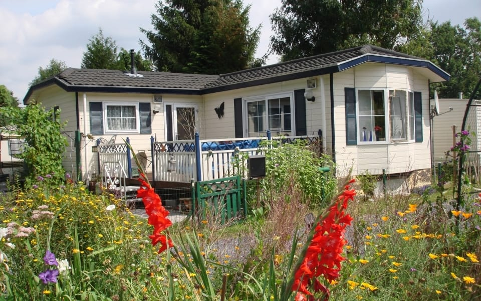
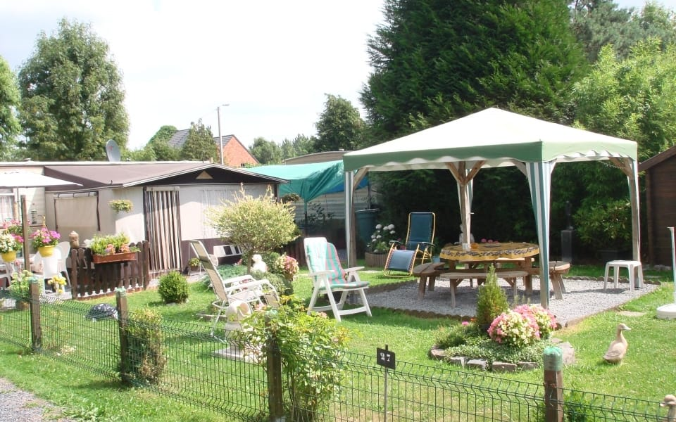
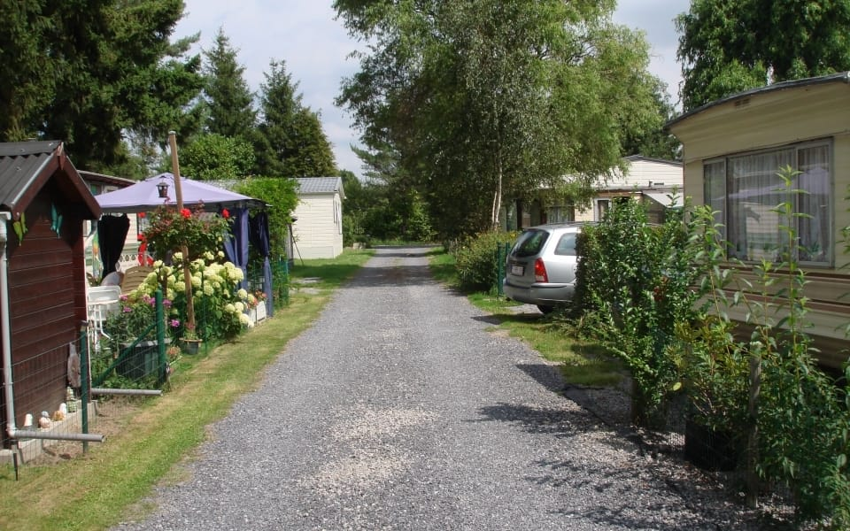
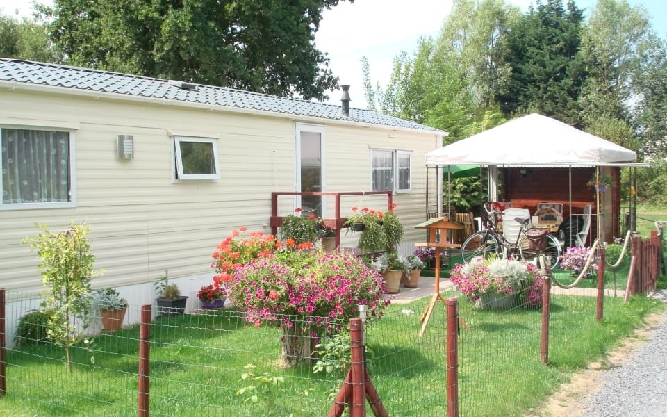
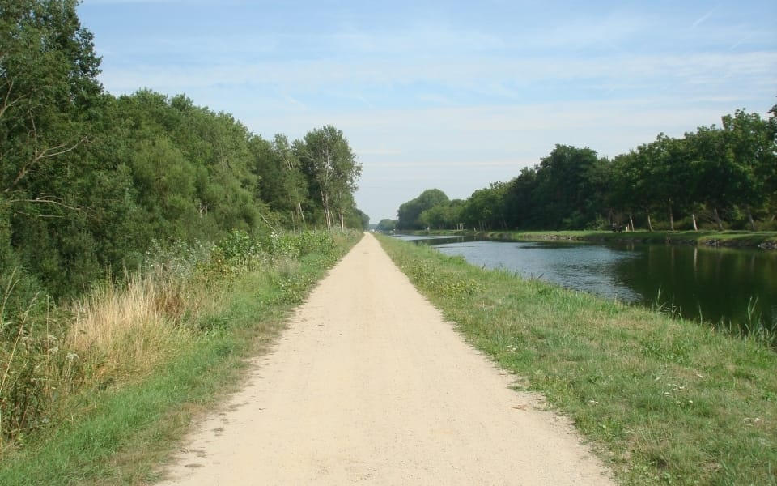
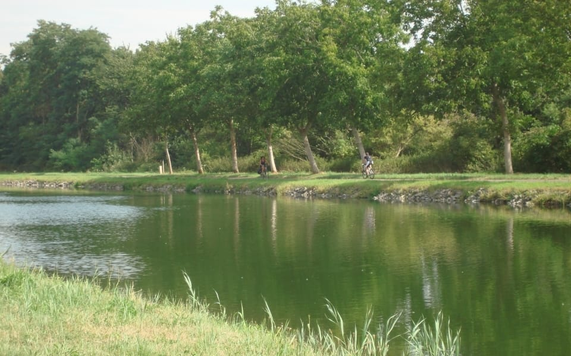
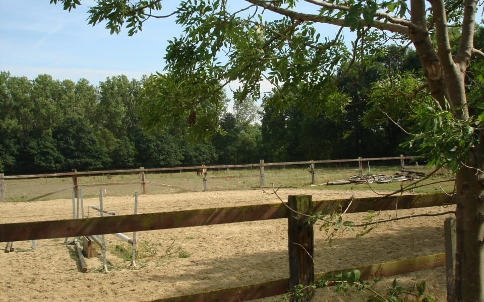
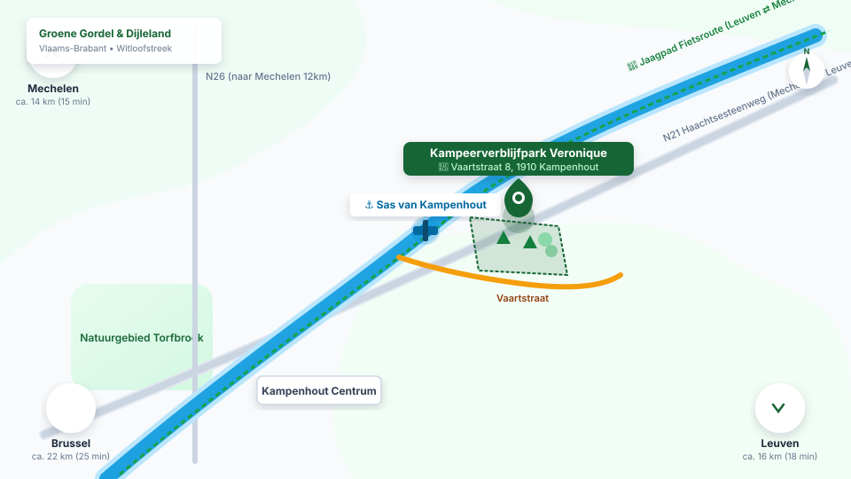
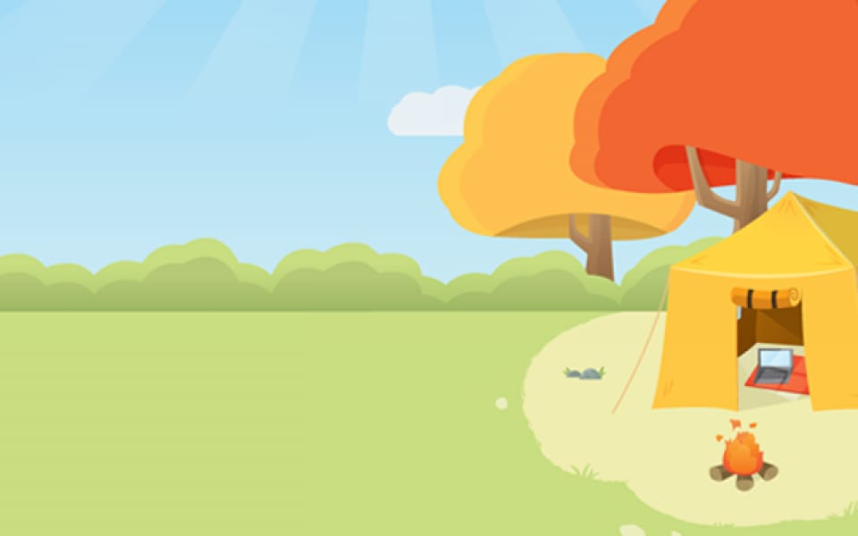
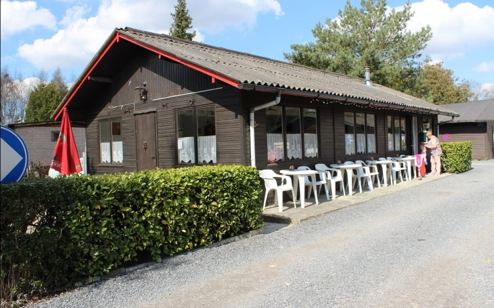

Eenvoud, rust en ruimte aan de Leuvense Vaart.
Aan het kabbelende water van het kanaal Leuven-Dijle vindt u Kampeerverblijfpark Veronique. Een gemoedelijke en overzichtelijke camping voor residentiële gasten en reizigers met trekcaravan, camper of tent. Zonder drukte of entertainmentprogramma's, maar mét vogelgeluiden, het jaagpad voor de deur en een warm welkom.

Het park en de omgeving in beeld
Originele beelden van onze ruime standplaatsen, de verzorgde lanen en de rustgevende ligging aan de Vaartstraat.






“Tussen Mechelen en Leuven, direct aan het autovrije jaagpad van de Vaart. Een plek waar stilte, natuur en vriendelijkheid nog vanzelfsprekend zijn.”
Drie vormen van gastvrij overnachten
Bij ons vindt u geen massale vakantieparkdrukte, maar een overzichtelijk en goed onderhouden domein met respect voor elkaars rust.
Voor trekkers & caravans
Ruime, groene grasplaatsen met stroomaansluiting en lozingspunt voor chemisch toilet. Gemakkelijk bereikbaar voor zowel compacte zwerfauto's als grotere trekcaravans.
- Stroomaansluiting CEE (forfait tot 10 kW inbegrepen)
- Verzorgde grasbodem met natuurlijke afbakening
- Lozingspunt chemisch toilet en grijs water
Voor wandelaars & fietsers
Pal aan het verkeersvrije jaagpad langs de Leuvense Vaart en het fietsknooppuntennetwerk van Vlaams-Brabant. Een eenvoudige, betaalbare en rustige overnachtingsplek voor wie met de tent onderweg is.
- Beschut en natuurlijk tentenveld
- Sanitair gebouw met warme douches (jetons)
- Veilige stalling voor fietsen bij de standplaats
Residentiële jaarplaatsen
Voor vaste verblijvers die het hele seizoen willen genieten van hun vertrouwde stek in het groen. Een rustige, hechte gemeenschap met respect voor elkaars privacy.
- Royale seizoens- en jaarpercelen
- Vaste aansluitingen en terreinonderhoud
- Beschikbaarheid en voorwaarden op aanvraag
Eerlijke prijzen, helder op een rij
Geen onduidelijke vanaf-tarieven of verborgen boekingskosten. U weet vooraf precies waar u aan toe bent.
Tarieven per overnachting (toeristische plaatsen)
Geldig voor caravans, zwerfauto's (campers) en tenten| Omschrijving | Specificatie | Tarief |
|---|---|---|
| Staanplaats (basis) | Inclusief caravan, camper of tent + toegang sanitair | € 25,00 / dag |
| Volwassenen | Per persoon per overnachting | € 5,00 / p.p. |
| Kinderen van 7 t/m 14 jaar | Per kind per overnachting | € 3,00 / kind |
| Kinderen tot 7 jaar | Jonge kinderen verblijven gratis | Gratis |
| Honden | Aangelijnd van harte welkom (max. 2 per plaats) | Gratis |
| Elektriciteitsaansluiting | Forfait per dag (tot 10 kW verbruik inbegrepen)* | € 8,00 / dag |
| Douchejetons | Verkrijgbaar bij het beheer | € 2,50 / stuk |
Tussen water en velden in Vlaams-Brabant
Kampeerverblijfpark Veronique ligt direct aan de Vaartstraat ter hoogte van het historische Sas van Kampenhout. Deze sluis op het kanaal Leuven-Dijle is al decennia een geliefde halte voor wandelaars, fietsers en pleziervaartuigen.
Zodra u de poort uitstapt, bevindt u zich op het jaagpad. Zonder gemotoriseerd verkeer fietst u in alle ontspanning noordwaarts naar de historische binnenstad van Mechelen (14 km) of zuidwaarts naar Leuven (16 km).



Reserveren of een vraag stellen?
Wilt u een plaats reserveren of heeft u een vraag over de beschikbaarheid? Neem gerust rechtstreeks contact met ons op via e-mail of telefoon. Wij antwoorden u zo spoedig mogelijk.
kampeerverblijfparkveronique@hotmail.com